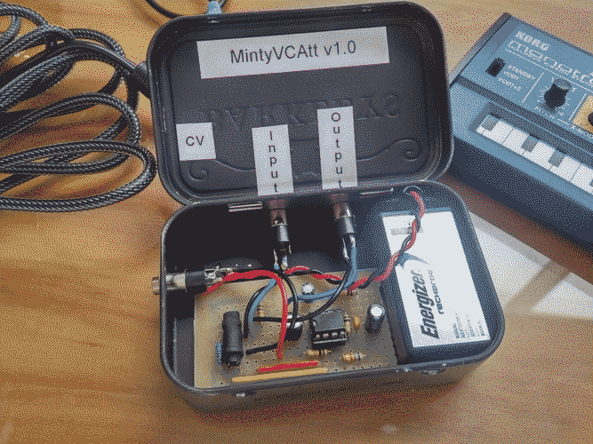
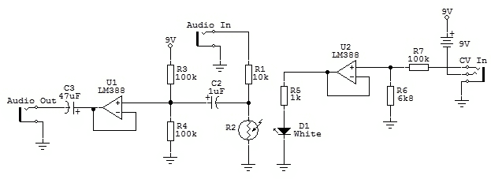
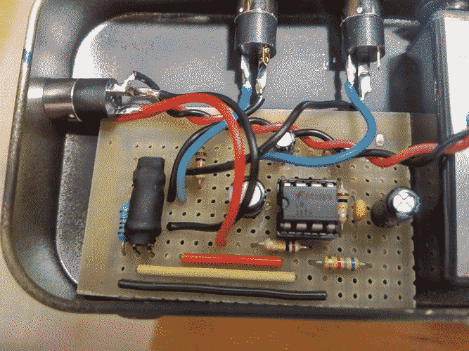

MintyVCAtt - Altoids Tin VCA
For the last couple of months I've been pretty hooked into audio projects, specially music creation related. This was the first quick project I've built to hopefully end up with a semi-modular synthesizer in a very distant future. The main idea is to basically build a bunch of the simple building blocks of a modular synth in the worst way possible, using Altoids tins and project boxes instead of a rack, which will make patching a real nightmare, but I'm sure will look even messier than a rack modular synth.


The project turned up rather well, it was designed to be extremely simple and easy to build, and had to fit inside the tin with the 9V battery and the connectors, this lead to some restrictions in the size of the circuit (compromises).


As you can clearly see the circuit is extremely simple, but gets the job done quite well. I've used the simplest method of voltage controlled attenuation, the LED coupled with a LDR, this gives it very low distortion, but a very slow attack speed compared to other designs. The circuit accepts a 0-3V CV signal which controls the current thought the LED, so more CV means the input signal will be attenuated!
You can also notice something weird in the CV input jack, that's a very handy trick to incorporate a power switch into a project, I learned this method from DIY stompboxes around the internet. The idea is that you connect your power negative to the ring (right channel) of a stereo jack, so that when you connect a mono plug into the socket, the ring and sleeve will be shorted out, connecting your power negative to your circuit's ground.


The circuit is pretty simple and was made as a quick hack to do some audio experiments, but feel free to play around with it, and feedback is always welcome!
This article was imported from my old blog . Some things may be broken.